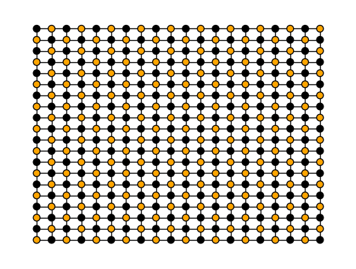
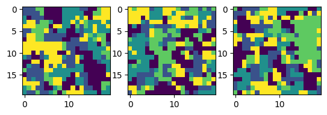

00 probabilistic computing
A concrete example#
To make all of this more concrete, here we will implement a simulation of a simple probabilistic computer sampling from an EBM using hamon.
We will implement sampling for a Potts Model, which is a type of EBM that was first developed to study various phenomena in solid-state physics. Potts models have energy functions like,
Here, \(x_i\) is an integer representing a possible state of a categorical random variable. The vector \(W^{(1)}_{i}\) induces a bias on the \(i^{th}\) variable by adding or subtracting energy based on the value of \(x_i\). The matrix \(W^{(2)}_{i, j}\) generates an interaction between the \(i^{th}\) and \(j^{th}\) variables by contributing a term to the energy function that depends on both \(x_i\) and \(x_j\).
Let's use hamon to run block Gibbs sampling on a Potts model.
First, some imports that will be useful,
from hamon.block_management import Block
from hamon.block_sampling import BlockGibbsSpec, sample_states, SamplingSchedule
from hamon.pgm import CategoricalNode
from hamon.models.discrete_ebm import (
CategoricalEBMFactor,
CategoricalGibbsConditional,
)
from hamon.factor import FactorSamplingProgram
The Potts model energy function naturally suggests a graphical interpretation. Namely, we can assign each random variable in the problem to a node, and assign biases to each node to implement the \(W^{(1)}\). We can connect variables with edges to represent the interactions \(W^{(2)}\).
As such, let's define a simple graph to use in our problem,
side_length = 20
# in this simple example we will just use a basic grid, although hamon is capable of dealing with arbitrary graph topologies
G = nx.grid_graph(dim=(side_length, side_length), periodic=False)
# label the nodes with something hamon recognizes for convenience
coord_to_node = {coord: CategoricalNode() for coord in G.nodes}
nx.relabel_nodes(G, coord_to_node, copy=False)
for coord, node in coord_to_node.items():
G.nodes[node]["coords"] = coord
# write down the color groups for later
bicol = nx.bipartite.color(G)
color0 = [n for n, c in bicol.items() if c == 0]
color1 = [n for n, c in bicol.items() if c == 1]
# write down the edges in a different format for later
u, v = map(list, zip(*G.edges()))
# plot the graph
pos = {n: G.nodes[n]["coords"][:2] for n in G.nodes}
colors = ["black", "orange"]
node_colors = [colors[bicol[n]] for n in G.nodes]
fig, axs = plt.subplots()
nx.draw(
G,
pos=pos,
ax=axs,
node_size=50.0,
node_color=node_colors,
edgecolors="k",
with_labels=False,
)

The graph we just drew can be interpreted as a high-level schematic for a probabilistic computer. Each node is associated with specialized circuitry for performing the Gibbs sampling conditional update, which requires state information from neighboring nodes that is communicated along the edges (which could represent physical wires). Nodes of the same color can be updated in parallel, which means that a single iteration of Gibbs sampling can be performed by first updating all of the orange nodes simultaneously, followed by all of the blue nodes.
Now that we have our graph, we can define the interactions that make up the energy function we described earlier. hamon comes with a canned implementation of Potts model style interactions in hamon.models that we can leverage here. We will consider a simple case that is commonly studied in physics with no biases and identity coupling matrices.
# how many categories to use for each variable
n_cats = 5
# temperature parameter
beta = 1.0
# implements W^{2} for each edge
# in this case we are just using an identity matrix, but this could be anything
id_mat = jnp.eye(n_cats)
weights = beta * jnp.broadcast_to(jnp.expand_dims(id_mat, 0), (len(u), *id_mat.shape))
coupling_interaction = CategoricalEBMFactor([Block(u), Block(v)], weights)
interactions = [coupling_interaction]
We can use these interactions to build a sampling program! hamon exposes tools that we can use to very easily run the Gibbs sampling algorithm for our problem.
For our Potts model, we will need to update our state using a conditional distribution with the energy function,
This corresponds to sampling from a softmax distribution. hamon comes pre-packaged with this conditional, which we will leverage to perform our sampling:
# first, we have to specify a division of the graph into blocks that will be updated in parallel during gibbs sampling
# During gibbs sampling, we are only allowed to update nodes in parallel if they are not neighbours
# Mathematically, this means we should choose our sampling blocks based on the "minimum coloring" of the graph
# we already computed this earlier
# a Block of nodes is simply a sequence of nodes that are all the same type
# we only have one type of node here, so not important to understand yet
blocks = [Block(color0), Block(color1)]
# our grouping of the graph into blocks
spec = BlockGibbsSpec(blocks, [])
# we have to define how each node in our blocks should be updated during each iteration of Gibbs sampling
# hamon comes with a sampler that will do this for the vanilla potts model we are using here, so lets use that
sampler = CategoricalGibbsConditional(n_cats)
# now we can make a sampling program, which combines our grouping with the interactions we defined earlier
prog = FactorSamplingProgram(
spec, # our block decomposition of the graph
[
sampler for _ in spec.free_blocks
], # how to update the nodes in each block every iteration of Gibbs sampling
interactions, # the interactions present in our model
[],
)
That's everything! Now we can simply run our sampling program and observe the results,
# rng seed
key = jax.random.key(4242)
# everything in hamon is completely compatible with standard jax functionality like jit, vmap, etc.
# here we will use vmap to run a bunch of parallel instances of Gibbs sampling
n_batches = 100
# we need to initialize our Gibbs sampling instances
init_state = []
for block in spec.free_blocks:
key, subkey = jax.random.split(key, 2)
init_state.append(
jax.random.randint(
subkey,
(n_batches, len(block.nodes)),
minval=0,
maxval=n_cats,
dtype=jnp.uint8,
)
)
# how we should schedule our sampling
schedule = SamplingSchedule(
# how many iterations to do before drawing the first sample
n_warmup=0,
# how many samples to draw in total
n_samples=100,
# how many steps to take between samples
steps_per_sample=5,
)
keys = jax.random.split(key, n_batches)
# now run sampling
samples = jax.jit(
jax.vmap(lambda i, k: sample_states(k, prog, schedule, i, [], [Block(G.nodes)]))
)(init_state, keys)
If we look at the results of our sample, we are able to observe domain formation, which is a very famous property of Potts models. Domain formation happens because our diagonal weight matrix encourages neighbouring variables to match,, leading to the formation of domains where groups of neighbouring variables are all in the same state.
to_plot = [0, 7, 21]
fig, axs = plt.subplots(nrows=1, ncols=len(to_plot))
for i, num in enumerate(to_plot):
axs[i].imshow(samples[0][num, -1, :].reshape((side_length, side_length)))

Despite its apparent simplicity, this example gets at the heart of why EBMs can be used as powerful machine learning primitives. Even though our model only involves simple interactions between neighbouring variables, it produces complex emergent long-range correlations that are difficult to predict and understand. By learning the weights of a model like this (instead of just setting them to be the identity matrix), we can take advantage of this capacity for complexity to model complex real-world phenomena, and do so using very little energy by leveraging probabilistic computing hardware.
We've only scratched the surface of what can be done with hamon in this simple example. While here we mostly leaned on canned functionality built into hamon, in reality, hamon was designed from the ground up to make it easier for users to implement their own entirely novel probabilistic graphical model block-sampling routines. We designed it this way because probabilistic computing is a rapidly changing field. So it's essential to have flexible tools available to you that minimize exploratory friction.
The other examples in this repo will begin to explore some of the more advanced functionality hamon offers. If you are interested in using hamon for your own research, we encourage you to check it out.
Suppose you want to learn more about how hardware-compatible EBMs may be applied to real machine learning problems. In that case, you should check out our paper and an implementation of it in hamon. Our primary hope for this library is that it empowers its users to build on our work, developing progressively more complex machine learning systems that increasingly leverage ultra-efficient probabilistic computing.